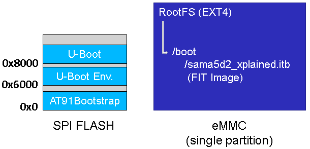
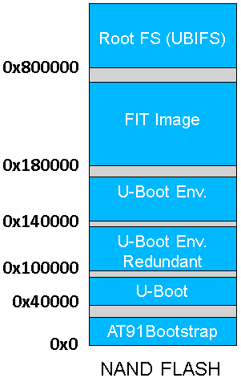

SAM-BA 3 subsections
Install SAM-BA software in your PC
In addition to the official SAM-BA pages on http://www.microchip.comIn addition to the Qt5
QML language for scripting used for flashing the demos, most common SAM-BA action can be done using SAM-BA command line.
For browsing information on the SAM-BA command line usage, please see the Command Line Documentation that is available in the SAM-BA installation directory: doc/index.html or doc/cmdline.html .
SAM-BA includes command line interface that provides support for the most common actions:
- reading / writing to arbitrary memory addresses and/or peripherals
- uploading applets and using them to erase/read/write external memories
The command line interface is designed to be self-documenting.
The main commands can be listed using the "sam-ba --help" command:
Usage: ./sam-ba [options] SAM-BA Command Line Tool Options: -v, --version Displays version information. -h, --help Displays this help. -x, --execute <script.qml> Execute script <script-file>. -p, --port <port[:options:...]> Communicate with device using <port>. -d, --device <device> Connected device is <device>. -b, --board <board> Connected board is <board>. -m, --monitor <command[:options:...]> Run monitor command <command>. -a, --applet <applet[:options:...]> Load and initialize applet <applet>. -c, --command <command[:args:...]> Run command <command>.
Additional help can be obtained for most commands by supplying a "help" parameter that will display their usage.
For example "sam-ba --port help" will display:
Known ports: j-link, serial
Command that take an argument with options (port, monitor, applet) will display even more documentation when called with "help" as option value.
For example "sam-ba --port serial:help" will display:
Syntax: serial:[<port>]:[<baudrate>] Examples: serial -> serial port (will use first AT91 USB if found otherwise first serial port) serial:COM80 -> serial port on COM80 serial:ttyUSB0:57600 -> serial port on /dev/ttyUSB0, baudrate 57600
Run script to flash the demo
- download the demo package for the board. They are marked as \"Media type: $percntIF{ \"'' = 'nandflash'\" then=\"NAND Flash\" else=\"Boot on SPI Flash + rootfs on eMMC\" }$percnt\" in the table above
- extract the demo package
- run your usual terminal emulator and enter the demo directory
- make sure that the
sam-baapplication is in your Operating System path so that you can reach it from your demo package directory - for Microsoft Windows users: Launch the
demo_linux_.batfile - for Linux users: Launch the
demo_linux_.shfile - this script runs SAM-BA 3 and the associated
QMLsam-ba script (demo_linux__usb.qml) with proper parameters - when you reach the end of the flashing process (this will take a few minutes), the following line is written:
-I- === Done. ===
- connect a serial link on DBGU and open the terminal emulator program as explained just above
- power cycle the board
- monitor the system while it's booting on the LCD screen or through the serial line
Connect the USB to the board before launching SAM-BA
- Remove power from the board
- JP9 must be opened (BMS=1) to boot from the on-chip Boot ROM
| Cogent module | Embest module | Ronetix module |
|---|---|---|
open *NCS jumper | open SW1 switch (not ON position) | open J1 and J2 jumpers |
| which is (are) located on the CPU module to prevent access to serial flash and NAND flash |
- power up the board
- check whether the board is found in your PC as a USB device
- For Microsoft Windows users: verify that the USB connection is well established
AT91 USB to Serial Convertershould appear in Device Manager. If it shows a unknown device you need to download and install the driver: AT91SAM USB CDC driver

- For Linux users: check $percntGREEN$percnt/dev/ttyACMx$percntENDCOLOR$percnt by monitoring the last lines of
dmesgcommand:
- For Microsoft Windows users: verify that the USB connection is well established
| Cogent module | Embest module | Ronetix module |
|---|---|---|
close *NCS jumper | close SW1 switch (move to ON position) | close J1 and J2 jumpers |
| which is (are) located on the CPU module to re-gain access to serial flash and NAND flash |
Connect the USB to the board before launching SAM-BA
- Ensure SDCARD is not inserted and SPI, QSPI memories are not flashed
- Make sure that J13
DISABLE BOOTjumper is kept open - $percntORANGE$percntpress SW4 DIS_BOOT button$percntENDCOLOR$percnt to disable NAND Flash memory access
- Press SW3
nRSTreset button to boot from on-chip Boot ROM- For Microsoft Windows users: verify that the USB connection is well established
AT91 USB to Serial Convertershould appear in Device Manager. If it shows a unknown device you need to download and install the driver: AT91SAM USB CDC driver
- For Linux users: check $percntGREEN$percnt/dev/ttyACMx$percntENDCOLOR$percnt by monitoring the last lines of
dmesgcommand:
- For Microsoft Windows users: verify that the USB connection is well established
- $percntORANGE$percntrelease the SW4 DIS_BOOT button$percntENDCOLOR$percnt to reactivate NAND Flash memory access
Connect the USB to the board before launching SAM-BA
- $percntORANGE$percntShort the JP7 (BOOT_DIS)$percntENDCOLOR$percnt to prevents booting from Nand or serial Flash by disabling Flash Chip Selects
- Connect a USB micro-A cable to the board (J11 5V-USB-A) to power up the board
- $percntORANGE$percntOpen the JP7 (BOOT_DIS)$percntENDCOLOR$percnt to enable booting from Nand or serial Flash by enabling Flash Chip Selects
- check whether the board is found in your PC as a USB device:
- For Microsoft Windows users:* verify that the USB connection is well established
AT91 USB to Serial Convertershould appear in Device Manager. If it shows a unknown device you need to download and install the driver: AT91SAM USB CDC driver
- For Linux users: check $percntGREEN$percnt/dev/ttyACMx$percntENDCOLOR$percnt by monitoring the last lines of
dmesgcommand:
- For Microsoft Windows users:* verify that the USB connection is well established
Connect the USB to the board before launching SAM-BA
- $percntORANGE$percntOpen JP5$percntENDCOLOR$percnt to disable NAND Flash memory access
- Press BP2 reset button to boot from on-chip Boot ROM
- $percntORANGE$percntClose JP5$percntENDCOLOR$percnt to enable NAND Flash memory access
- For Microsoft Windows users: verify that the USB connection is well established
AT91 USB to Serial Convertershould appear in Device Manager. If it shows a unknown device you need to download and install the driver: AT91SAM USB CDC driver
- For Linux users: check $percntGREEN$percnt/dev/ttyACMx$percntENDCOLOR$percnt by monitoring the last lines of
dmesgcommand:
- For Microsoft Windows users: verify that the USB connection is well established
Connect the USB to the board before launching SAM-BA
- $percntORANGE$percntShort the JP9 (BOOT_DIS)$percntENDCOLOR$percnt to prevents booting from eMMC or serial Flash by disabling Flash Chip Selects
- Connect a USB micro-A cable to the board (J23 A5-USB-A). It powers the board
- check whether the board is found in your PC as a USB device:
- For Microsoft Windows users: verify that the USB connection is well established
AT91 USB to Serial Convertershould appear in Device Manager. If it shows a unknown device you need to download and install the driver: AT91SAM USB CDC driver
- For Linux users: check $percntGREEN$percnt/dev/ttyACMx$percntENDCOLOR$percnt by monitoring the last lines of
dmesgcommand:
- For Microsoft Windows users: verify that the USB connection is well established
- $percntORANGE$percntOpen the JP9 (BOOT_DIS)$percntENDCOLOR$percnt to reactivate access to the on-board Flash devices
Connect the USB to the board before launching SAM-BA
- $percntORANGE$percntOpen the JP8$percntENDCOLOR$percnt to prevents booting from NAND Flash by disabling Flash Chip Selects
- Connect a USB micro-A cable to the board (J4 USB-A). It powers the board
- check whether the board is found in your PC as a USB device:
- For Microsoft Windows users: verify that the USB connection is well established
AT91 USB to Serial Convertershould appear in Device Manager. If it shows a unknown device you need to download and install the driver: AT91SAM USB CDC driver
- For Linux users: check $percntGREEN$percnt/dev/ttyACMx$percntENDCOLOR$percnt by monitoring the last lines of
dmesgcommand:
- For Microsoft Windows users: verify that the USB connection is well established
- $percntORANGE$percntShort the JP8$percntENDCOLOR$percnt to allow access to the on-board Flash devices
SPI + eMMC Flash demo - Memory map
NAND Flash demo - Memory map
$percntX$percnt use SAM-BA 3.2.y onwards. You can download it here: SAM-BA 3.x release page
$percntH$percnt If you need to store the root filesystem on a SD Card, use information contained in StroreRootFSonSD. This is useful for Linux4SAM demos older than 5.6. $percntX$percnt use SAM-BA 3.2.y onwards. You can download it here: SAM-BA 3.x release page
$percntI$percnt when choosing the board variant with the
-b parameter of SAM-BA, the default PMECC configuration for the NAND populated on the board is valid. You can verify its value by running the command that reads one byte in a dummy file (named test.bin in the following command):
# sam-ba -p serial -b -a nandflash -c read:test.bin:0:1 Opening serial port 'ttyACM0' Connection opened. Detected memory size is 536870912 bytes. Page size is 4096 bytes. Buffer is 20480 bytes (5 pages) at address 0x0020a240. $percntORANGE$percntNAND header value is 0xc1e04e07.$percntENDCOLOR$percnt Supported erase block sizes: 256KB Executing command 'read:test.bin:0:1' Read 1 bytes at address 0x00000000 (100.00%) Connection closed.You can figure out that the default PMECC parameter for this == board is $percntORANGE$percnt0xc1e04e07$percntENDCOLOR$percnt. $percntH$percnt: Note that if you connect a serial console to the SoC RomCode default UART, you can see even more details about the NAND ECC parameters given by the SAM-BA Applet:
Applet 'NAND Flash' from softpack 2.10 (v2.10). Initializing NAND ioSet1 Bus Width 8 PMECC configuration: 0xc1e04e07 Sector size: 512 Sectors per page: 8 Spare size: 224 ECC bits: 8 ECC offset: 120 ECC size: 104 PMECC enabled Buffer Address: 0x0020a240 Buffer Size: 20480 bytes NAND applet initialized successfully.If you want to change the default PMECC parameters you can simply specify another value on the SAM-BA command line with the
-a nandflash argument as shown below:
# sam-ba -p serial -b -a nandflash:help
Syntax: nandflash:[<ioset>]:[<bus_width>]:[<header>]
Parameters:
ioset I/O set
bus_width NAND bus width (8/16)
header NAND header value
Examples:
nandflash use default board settings
nandflash:2:8:0xc0098da5 use fully custom settings (IOSET2, 8-bit bus, header is 0xc0098da5)
$percntORANGE$percntnandflash:::0xc0098da5 use default board settings but force header to 0xc0098da5$percntENDCOLOR$percnt
For information on NAND header values, please refer to SAMA5D4 datasheet section \"12.4.4 Detailed Memory Boot Procedures\".
By reading this in-line documentation we can specify the NAND PMECC parameter with this command:
# sam-ba -p serial -b $percntORANGE$percnt-a nandflash:::0xc1e04e07$percntENDCOLOR$percnt Opening serial port 'ttyACM0' Connection opened. Detected memory size is 536870912 bytes. Page size is 4096 bytes. Buffer is 20480 bytes (5 pages) at address 0x0020a240. $percntORANGE$percntNAND header value is 0xc1e04e07.$percntENDCOLOR$percnt Supported erase block sizes: 256KB Connection closed.$percntI$percnt when choosing the board variant with the
-b parameter of SAM-BA, the default PMECC configuration for the NAND populated on the board is valid. You can verify its value by running the command that reads one byte in a dummy file (named test.bin in the following command):
$percntX$percnt before accessing the NAND flash, you have to initialize the external RAM:
# sam-ba -p serial -b sam9xx5-ek -a extram
# sam-ba -p serial -b sam9xx5-ek -a nandflash -c read:test.bin:0:1 Opening serial port 'ttyACM0' Connection opened. Compatible device detected: SAM9G35. Detected memory size is 268435456 bytes. Page size is 2048 bytes. Buffer is 131072 bytes (64 pages) at address 0x2000a000. $percntORANGE$percntNAND header value is 0xc0c00405.$percntENDCOLOR$percnt Supported erase block sizes: 128KB Executing command 'read:test.bin:0:1' Read 1 bytes at address 0x00000000 (100.00%) Connection closed.You can figure out that the default PMECC parameter for this
sam9xx5-ek board is $percntORANGE$percnt0xc0c00405$percntENDCOLOR$percnt.
$percntH$percnt: Note that if you connect a serial console to the SoC RomCode default UART, you can see even more details about the NAND ECC parameters given by the SAM-BA Applet:
Applet 'NAND Flash' from softpack 2.10 (v2.10). Initializing NAND ioSet1 Bus Width 16 PMECC configuration: 0xc0c00405 Sector size: 512 Sectors per page: 4 Spare size: 64 ECC bits: 2 ECC offset: 48 ECC size: 16 PMECC enabled Buffer Address: 0x2000a000 Buffer Size: 67065856 bytes NAND applet initialized successfully.If you want to change the default PMECC parameters you can simply specify another value on the SAM-BA command line with the
-a nandflash argument as shown below:
# sam-ba -p serial -b sam9xx5-ek -a nandflash:help
Syntax: nandflash:[<ioset>]:[<bus_width>]:[<header>]
Parameters:
ioset I/O set
bus_width NAND bus width (8/16)
header NAND header value
Examples:
nandflash use default board settings
nandflash:2:8:0xc0098da5 use fully custom settings (IOSET2, 8-bit bus, header is 0xc0098da5)
$percntORANGE$percntnandflash:::0xc0098da5 use default board settings but force header to 0xc0098da5$percntENDCOLOR$percnt
For information on NAND header values, please refer to SAMA5D4 datasheet section \"12.4.4 Detailed Memory Boot Procedures\".
By reading this in-line documentation we can specify the NAND PMECC parameter with this command:
# sam-ba -p serial -b sam9xx5-ek $percntORANGE$percnt-a nandflash:::0xc0c00405$percntENDCOLOR$percnt Opening serial port 'ttyACM0' Connection opened. Compatible device detected: SAM9G35. Detected memory size is 268435456 bytes. Page size is 2048 bytes. Buffer is 131072 bytes (64 pages) at address 0x2000a000. $percntORANGE$percntNAND header value is 0xc0c00405.$percntENDCOLOR$percnt Supported erase block sizes: 128KB Connection closed.
Configure NAND ECC
Using default PMECC parameters
$percntI$percnt when choosing the board variant with the-b parameter of SAM-BA, the default PMECC configuration for the NAND populated on the board is valid. You can verify its value by running the command that reads one byte in a dummy file (named test.bin in the following command):
# sam-ba -p serial -b -a nandflash -c read:test.bin:0:1 Opening serial port 'ttyACM0' Connection opened. Detected memory size is 536870912 bytes. Page size is 4096 bytes. Buffer is 20480 bytes (5 pages) at address 0x0020a240. $percntORANGE$percntNAND header value is 0xc1e04e07.$percntENDCOLOR$percnt Supported erase block sizes: 256KB Executing command 'read:test.bin:0:1' Read 1 bytes at address 0x00000000 (100.00%) Connection closed.You can figure out that the default PMECC parameter for this == board is $percntORANGE$percnt0xc1e04e07$percntENDCOLOR$percnt. $percntH$percnt: Note that if you connect a serial console to the SoC RomCode default UART, you can see even more details about the NAND ECC parameters given by the SAM-BA Applet:
Applet 'NAND Flash' from softpack 2.10 (v2.10). Initializing NAND ioSet1 Bus Width 8 PMECC configuration: 0xc1e04e07 Sector size: 512 Sectors per page: 8 Spare size: 224 ECC bits: 8 ECC offset: 120 ECC size: 104 PMECC enabled Buffer Address: 0x0020a240 Buffer Size: 20480 bytes NAND applet initialized successfully.If you want to change the default PMECC parameters you can simply specify another value on the SAM-BA command line with the
-a nandflash argument as shown below:
# sam-ba -p serial -b -a nandflash:help
Syntax: nandflash:[<ioset>]:[<bus_width>]:[<header>]
Parameters:
ioset I/O set
bus_width NAND bus width (8/16)
header NAND header value
Examples:
nandflash use default board settings
nandflash:2:8:0xc0098da5 use fully custom settings (IOSET2, 8-bit bus, header is 0xc0098da5)
$percntORANGE$percntnandflash:::0xc0098da5 use default board settings but force header to 0xc0098da5$percntENDCOLOR$percnt
For information on NAND header values, please refer to SAMA5D4 datasheet section \"12.4.4 Detailed Memory Boot Procedures\".
By reading this in-line documentation we can specify the NAND PMECC parameter with this command:
# sam-ba -p serial -b $percntORANGE$percnt-a nandflash:::0xc1e04e07$percntENDCOLOR$percnt Opening serial port 'ttyACM0' Connection opened. Detected memory size is 536870912 bytes. Page size is 4096 bytes. Buffer is 20480 bytes (5 pages) at address 0x0020a240. $percntORANGE$percntNAND header value is 0xc1e04e07.$percntENDCOLOR$percnt Supported erase block sizes: 256KB Connection closed.
Run SAM-BA with USB connection (equivalent to
serial) and erase the beginning of the NAND flash and then write AT91Bootstrap binary:
# sam-ba -p serial -b -a nandflash -c erase::$percntBLUE$percnt0x40000$percntENDCOLOR$percnt -c writeboot:at91bootstrap-.bin Opening serial port 'ttyACM0' Connection opened. Detected memory size is 536870912 bytes. Page size is 4096 bytes. Buffer is 20480 bytes (5 pages) at address 0x0020a240. NAND header value is 0xc1e04e07. $percntBLUE$percntSupported erase block sizes: 256KB$percntENDCOLOR$percnt Executing command 'erase::0x40000' Erased 262144 bytes at address 0x00000000 (100.00%) Executing command 'writeboot:at91bootstrap-.bin' Prepended NAND header prefix (0xc1e04e07) Appending 4008 bytes of padding to fill the last written page Wrote 20480 bytes at address 0x00000000 (83.33%) Wrote 4096 bytes at address 0x00005000 (100.00%) Connection closed.Run SAM-BA with USB connection (equivalent to
serial) and erase the beginning of the NAND flash and then write AT91Bootstrap binary:
# sam-ba -p serial -b sam9xx5-ek -a nandflash -c erase::$percntBLUE$percnt0x40000$percntENDCOLOR$percnt -c writeboot:at91bootstrap.bin Opening serial port 'ttyACM0' Connection opened. Compatible device detected: SAM9G35. Detected memory size is 268435456 bytes. Page size is 2048 bytes. Buffer is 131072 bytes (64 pages) at address 0x2000a000. NAND header value is 0xc0c00405. $percntBLUE$percntSupported erase block sizes: 128KB$percntENDCOLOR$percnt Executing command 'erase::0x40000' Erased 131072 bytes at address 0x00000000 (50.00%) Erased 131072 bytes at address 0x00020000 (100.00%) Executing command 'writeboot:at91bootstrap.bin' Prepended NAND header prefix (0xc0c00405) Appending 1380 bytes of padding to fill the last written page Wrote 14336 bytes at address 0x00000000 (100.00%) Connection closed.Run SAM-BA with USB connection (equivalent to
serial) and erase the U-Boot section in the NAND flash memory map and then write U-Boot binary:
# sam-ba -p serial -b -a nandflash -c erase:0x40000:0x80000 -c write:u-boot-.bin:0x40000 Opening serial port 'ttyACM0' Connection opened. Detected memory size is 536870912 bytes. Page size is 4096 bytes. Buffer is 20480 bytes (5 pages) at address 0x0020a240. NAND header value is 0xc1e04e07. Supported erase block sizes: 256KB Executing command 'erase:0x40000:0x80000' Erased 262144 bytes at address 0x00040000 (50.00%) Erased 262144 bytes at address 0x00080000 (100.00%) Executing command 'write:u-boot-.bin:0x40000' Appending 3137 bytes of padding to fill the last written page Wrote 20480 bytes at address 0x00040000 (4.59%) Wrote 20480 bytes at address 0x00045000 (9.17%) Wrote 20480 bytes at address 0x0004a000 (13.76%) [..] Wrote 20480 bytes at address 0x00094000 (81.65%) Wrote 20480 bytes at address 0x00099000 (86.24%) Wrote 20480 bytes at address 0x0009e000 (90.83%) Wrote 20480 bytes at address 0x000a3000 (95.41%) Wrote 20480 bytes at address 0x000a8000 (100.00%) Connection closed.Run SAM-BA with USB connection (equivalent to
serial) and erase the U-Boot section in the NAND flash memory map and then write U-Boot binary:
# sam-ba -p serial -b sam9xx5-ek -a nandflash -c erase:0x40000:0x80000 -c write:u-boot.bin:0x40000 Opening serial port 'ttyACM0' Connection opened. Compatible device detected: SAM9G35. Detected memory size is 268435456 bytes. Page size is 2048 bytes. Buffer is 131072 bytes (64 pages) at address 0x2000a000. NAND header value is 0xc0c00405. Supported erase block sizes: 128KB Executing command 'erase:0x40000:0x80000' Erased 131072 bytes at address 0x00040000 (25.00%) Erased 131072 bytes at address 0x00060000 (50.00%) Erased 131072 bytes at address 0x00080000 (75.00%) Erased 131072 bytes at address 0x000a0000 (100.00%) Executing command 'write:u-boot.bin:0x40000' Appending 640 bytes of padding to fill the last written page Wrote 131072 bytes at address 0x00040000 (24.81%) Wrote 131072 bytes at address 0x00060000 (49.61%) Wrote 131072 bytes at address 0x00080000 (74.42%) Wrote 131072 bytes at address 0x000a0000 (99.22%) Wrote 4096 bytes at address 0x000c0000 (100.00%) Connection closed.
Programming components into NAND
Program AT91Bootstrap binary
Run SAM-BA with USB connection (equivalent toserial) and erase the beginning of the NAND flash and then write AT91Bootstrap binary:
# sam-ba -p serial -b -a nandflash -c erase::$percntBLUE$percnt0x40000$percntENDCOLOR$percnt -c writeboot:at91bootstrap-.bin Opening serial port 'ttyACM0' Connection opened. Detected memory size is 536870912 bytes. Page size is 4096 bytes. Buffer is 20480 bytes (5 pages) at address 0x0020a240. NAND header value is 0xc1e04e07. $percntBLUE$percntSupported erase block sizes: 256KB$percntENDCOLOR$percnt Executing command 'erase::0x40000' Erased 262144 bytes at address 0x00000000 (100.00%) Executing command 'writeboot:at91bootstrap-.bin' Prepended NAND header prefix (0xc1e04e07) Appending 4008 bytes of padding to fill the last written page Wrote 20480 bytes at address 0x00000000 (83.33%) Wrote 4096 bytes at address 0x00005000 (100.00%) Connection closed.
Program U-Boot binary
Run SAM-BA with USB connection (equivalent toserial) and erase the U-Boot section in the NAND flash memory map and then write U-Boot binary:
# sam-ba -p serial -b -a nandflash -c erase:0x40000:0x80000 -c write:u-boot-.bin:0x40000 Opening serial port 'ttyACM0' Connection opened. Detected memory size is 536870912 bytes. Page size is 4096 bytes. Buffer is 20480 bytes (5 pages) at address 0x0020a240. NAND header value is 0xc1e04e07. Supported erase block sizes: 256KB Executing command 'erase:0x40000:0x80000' Erased 262144 bytes at address 0x00040000 (50.00%) Erased 262144 bytes at address 0x00080000 (100.00%) Executing command 'write:u-boot-.bin:0x40000' Appending 3137 bytes of padding to fill the last written page Wrote 20480 bytes at address 0x00040000 (4.59%) Wrote 20480 bytes at address 0x00045000 (9.17%) Wrote 20480 bytes at address 0x0004a000 (13.76%) [..] Wrote 20480 bytes at address 0x00094000 (81.65%) Wrote 20480 bytes at address 0x00099000 (86.24%) Wrote 20480 bytes at address 0x0009e000 (90.83%) Wrote 20480 bytes at address 0x000a3000 (95.41%) Wrote 20480 bytes at address 0x000a8000 (100.00%) Connection closed.
Programming components into SPI flash
Program AT91Bootstrap binary
Run SAM-BA with USB connection (equivalent toserial) and erase the beginning of the SPI flash and then write AT91Bootstrap binary:
# sam-ba -p serial -b sama5d2-xplained -a serialflash -c erase::0x3000 -c writeboot:at91bootstrap-sama5d2_xplained.bin Opening serial port 'ttyACM0' Connection opened. Detected memory size is 4194304 bytes. Page size is 256 bytes. Buffer is 93952 bytes (367 pages) at address 0x002290c0. Supported erase block sizes: 4KB, 32KB, 64KB Executing command 'erase::0x3000' Erased 4096 bytes at address 0x00000000 (33.33%) Erased 4096 bytes at address 0x00001000 (66.67%) Erased 4096 bytes at address 0x00002000 (100.00%) Executing command 'writeboot:at91bootstrap-sama5d2_xplained.bin' Appending 56 bytes of padding to fill the last written page Wrote 10752 bytes at address 0x00000000 (100.00%) Connection closed.$percntH$percnt Note that you can run several commands on the same SAM-BA invocation.
Program U-Boot binary
Run SAM-BA with USB connection (equivalent toserial) and erase the U-Boot section in the SPI flash memory map and then write U-Boot binary:
# sam-ba -p serial -b sama5d2-xplained -a serialflash -c erase:0x8000:0x70000 -c write:u-boot-sama5d2-xplained.bin:0x8000 Opening serial port 'ttyACM0' Connection opened. Detected memory size is 4194304 bytes. Page size is 256 bytes. Buffer is 93952 bytes (367 pages) at address 0x002290c0. Supported erase block sizes: 4KB, 32KB, 64KB Executing command 'erase:0x8000:0x70000' Erased 32768 bytes at address 0x00008000 (7.14%) Erased 65536 bytes at address 0x00010000 (21.43%) Erased 65536 bytes at address 0x00020000 (35.71%) Erased 65536 bytes at address 0x00030000 (50.00%) Erased 65536 bytes at address 0x00040000 (64.29%) Erased 65536 bytes at address 0x00050000 (78.57%) Erased 65536 bytes at address 0x00060000 (92.86%) Erased 32768 bytes at address 0x00070000 (100.00%) Executing command 'write:u-boot-sama5d2-xplained.bin:0x8000' Appending 118 bytes of padding to fill the last written page Wrote 93952 bytes at address 0x00008000 (23.30%) Wrote 93952 bytes at address 0x0001ef00 (46.60%) Wrote 93952 bytes at address 0x00035e00 (69.90%) Wrote 93952 bytes at address 0x0004cd00 (93.21%) Wrote 27392 bytes at address 0x00063c00 (100.00%) Connection closed.
Programming components into eMMC flash
Program rootfs file
With SAM-BA you can directly program SD/MMC images to the on-board eMMC. These images are named*.img or *.wic for the ones generated by Yocto Project.
# sam-ba -p serial -b sama5d2-xplained -a sdmmc -c write:atmel-qt5-demo-image-sama5d2-xplained.wic Opening serial port 'ttyACM0' Connection opened. Detected memory size is 3925868544 bytes. Page size is 512 bytes. Buffer is 88576 bytes (173 pages) at address 0x0022a5a0. Executing command 'write:atmel-qt5-demo-image-sama5d2-xplained.wic' Wrote 88576 bytes at address 0x00000000 (0.02%) Wrote 88576 bytes at address 0x00015a00 (0.04%) Wrote 88576 bytes at address 0x0002b400 (0.05%) Wrote 88576 bytes at address 0x00040e00 (0.07%) Wrote 88576 bytes at address 0x00056800 (0.09%) [..] Wrote 88576 bytes at address 0x1d4e8600 (99.98%) Wrote 88576 bytes at address 0x1d4fe000 (100.00%) Wrote 4608 bytes at address 0x1d513a00 (100.00%) Connection closed.$percntH$percnt Note that programming a rootfs of several hundreds of MiB will take a few minutes to complete.


| I | Attachment | Action | Size | Date | Who | Comment |
|---|---|---|---|---|---|---|
| |
demo_spi_emmc_map_lnx4sam6x.png | manage | 8.6 K | 2018-11-05 - 16:47 | TudorAmbarus |

{kind=link}
{kind=link}
Copyright © by the contributing authors. All material on this collaboration platform is the property of the contributing authors.
Linux® is the registered trademark of Linus Torvalds in the U.S. and other countries.
Microchip® and others, are registered trademarks or trademarks of Microchip Technology Inc. and its subsidiaries. 
Arm® and others are registered trademarks or trademarks of Arm Limited (or its affiliates). Other terms and product names may be trademarks of others.
Ideas, requests, contributions ? Connect to LinksToCommunities page.